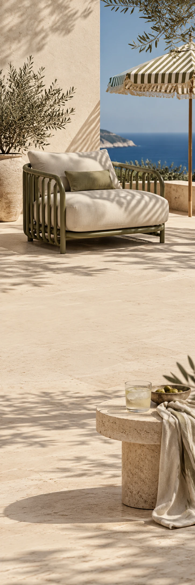

OLEA OUTSIDE
Buitenleven & designZomercollectie
OLEA OUTSIDE / THE LONG AFTERNOON
Buiten blijven
is ook een plan.
Zet de stoel maar in de schaduw.
Een plek waar je boek open blijft liggen. Een glas dat nog niet leeg is. Ontdek vormen en kleuren voor de middagen die nergens heen hoeven.
Bekijk de buiten-editWe zijn
nog even buiten.
Zet de stoel maar in de schaduw.
Bekijk de buiten-edit